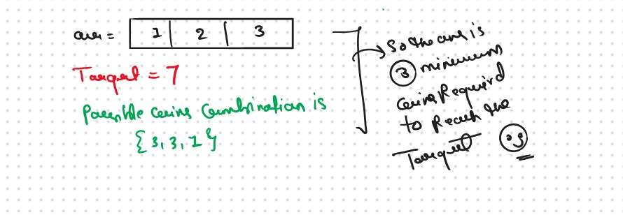
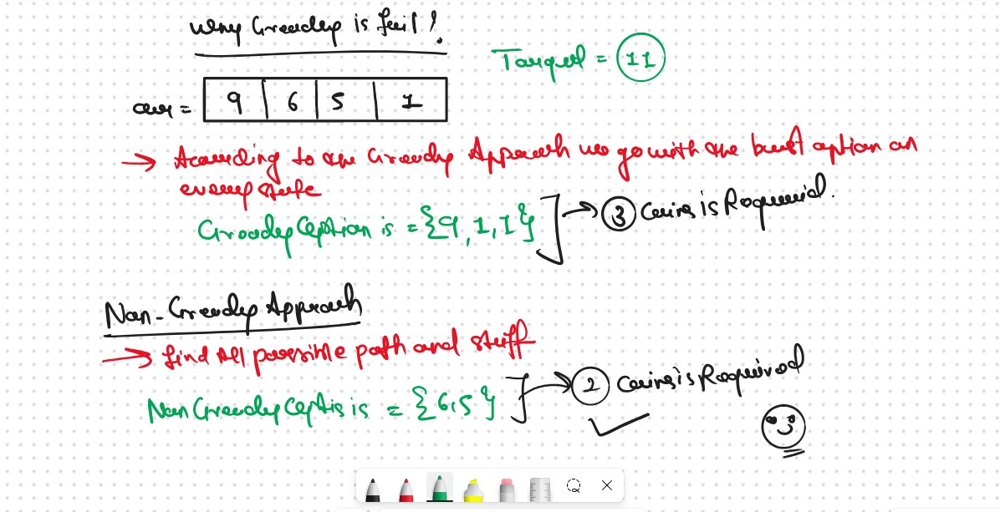
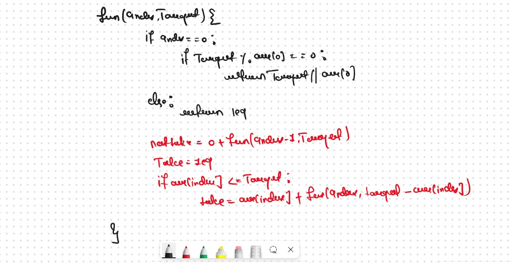
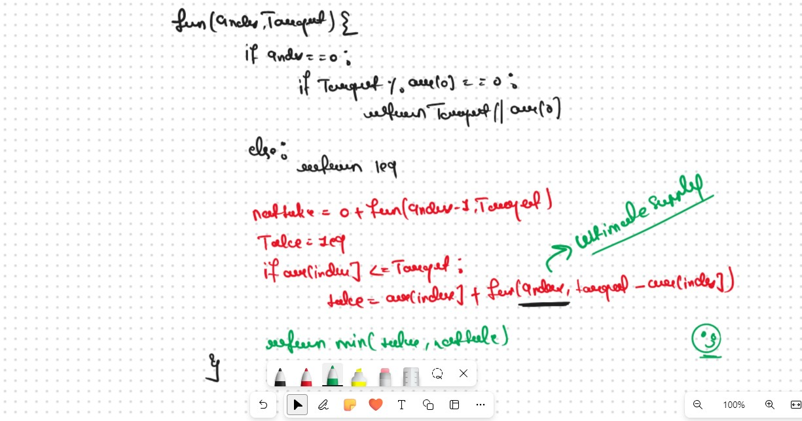
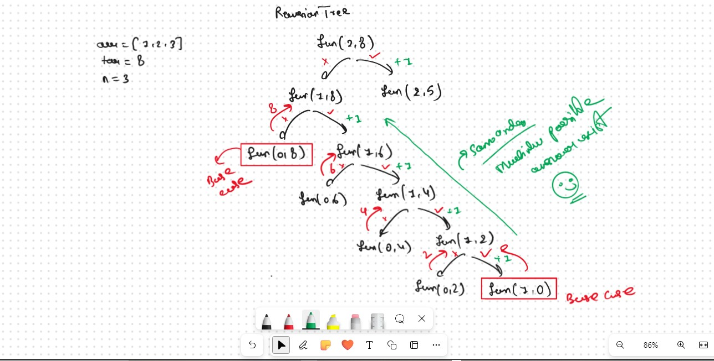

JB TAK FODEGA NHI .... TB TK CHODEGA NHI .... (MAANG)


DPL20 Minimum Coins "Infinite Supplies Pattern"
We are given a target sum of ‘X’ and ‘N’ distinct numbers denoting the coin denominations. We need to tell the minimum number of coins required to reach the target sum. We can pick a coin denomination for any number of times we want.
 Why a Greedy Solution doesn’t work?The first approach that comes to our mind is greedy. A greedy solution will fail in this problem because there is no ‘Uniformity’ in data. While selecting a local better choice we may choose an item that will in long term give less value.
Let us understand this with help of an example
Recursice Approch
Steps to form the Recursive SolutionStep 1: Express the problem in terms of indexes.
There is one more parameter “Target”. We need to know the given target that we want to achieve
So, we can say that initially, we need to find fun(n-1, Target) where T is the initial target given to us. fun(n-1, Target) means we are finding the minimum number of coins required to form the target sum by considering coins from index 0 to n-1.
Our Base Case
Step 2: Try out all possible choices at a given index.
We need to generate all the subsequences. We will use the pick/non-pick technique as discussed in, That we All Ready Learn in the Recursion Series.
We have two choices:VVVV Important Point
Note: We will consider the current coin only when its denomination value (arr[ind]) is less than or equal to the target Target.

Step 3: Return the maximum of take and notTake
The final pseudocode after steps 1, 2, and 3:
 Recursion Tree 
.png)
.png)
Sb Mai He Kru ...
Khud Bhi Kr le Khuch ..... Nalayk
Time & Space Complexity
Time Complexity: O(2^N)Reason: Exponential Time we find out the all the Possible Path
Space Complexity: O(N)
Reason: We are using a recursion stack space(O(N))
Memoization Approch
If we observe in the recursion tree, we will observe a many number of overlapping subproblems. Therefore the recursive solution can be memoized for to reduce the time complexity.
Steps to convert Recursive code to memoization solution:
.png)
.png)
Sb Mai He Kru ...
Khud Bhi Kr le Khuch ..... Nalayk
Time & Space Complexity
Time Complexity:O(N*T)Reason: There are N*T states therefore at max ‘N*T’ new problems will be solved.
Space Complexity: O(N*T) + O(N)
Reason: We are using a recursion stack space(O(N)) and a 2D array ( O(N*T)).
Tabulation Approch
Tabulation is a ‘bottom-up’ approach where we start from the base case and reach the final answer that we want and Memoization is the Top-down Approch.In Tabulation Approch We Just Creat a DP Array Same as Memoization and Simply Convert the Recurance Relation into the form of the Looping
Steps to convert Recursive Solution to Tabulation one..png)
.png)
Sb Mai He Kru ...
Khud Bhi Kr le Khuch ..... Nalayk
Time & Space Complexity
Time Complexity: O(N*T)Reason:There are 2 nested loops
Space Complexity: O(N*T)
Reason: We are using an external array of size ‘N*T’. Stack Space is eliminated.
Space Optimization
If we closelly Observed if any Tabulation Approch we used the Some Limited Stuff like: dp[ind][target] = dp[ind-1][target] + dp[ind-1][target-arr[ind]] for the finding the our ans then definetly here Spaced Optimization is Possible in that types of Problems. Always Remember
Golden Rule
.png)
.png)
Sb Mai He Kru ...
Khud Bhi Kr le Khuch ..... Nalayk
Time & Space Complexity
Time Complexity: O(N*T)Reason: There are three 2 nested loops
Space Complexity: O(T)
Reason: We are using two external arrays of size ‘T+1’.